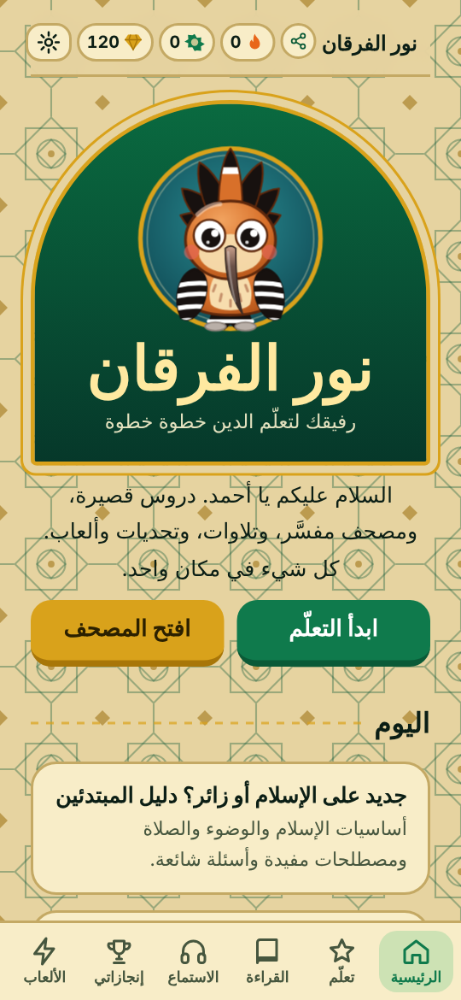
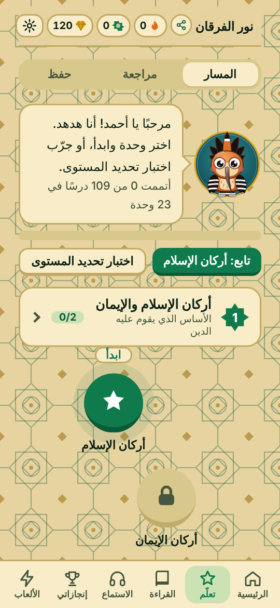
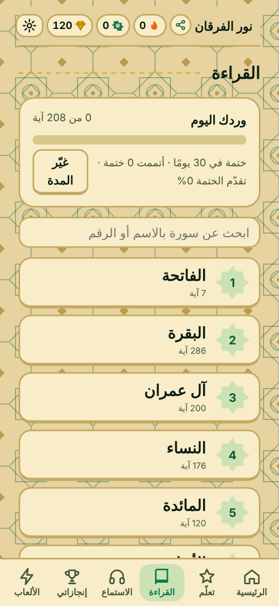

ماذا ستجد؟
مسار تعليمي23 وحدة وأكثر من مئة درس وآلاف الأسئلة مع مراجعة ذكية.
المصحف والتفسيرالميسر والجلالين تحت كل آية مع ترجمة إنجليزية وفرنسية.
المدرسية25 درسًا من العلوم الإسلامية للسنة الثالثة ثانوي مع اختبار لكل درس وفصل وللسنة.
تشجيع وتحدٍّأوسمة وأيام متتالية وألعاب وتحدٍّ مع الأصدقاء.
أذكار وحفظسبحة وأذكار الصباح والمساء ومتابعة الحفظ.
شهاداتشهادة إتمام عند نجاحك في اختبار الفصل أو السنة.
صور من التطبيق



ثبّته كتطبيق على هاتفك
- أندرويد (Chrome): افتح الموقع ثم القائمة ⋮ ثم «تثبيت التطبيق».
- آيفون (Safari): زر المشاركة ثم «إضافة إلى الشاشة الرئيسية».